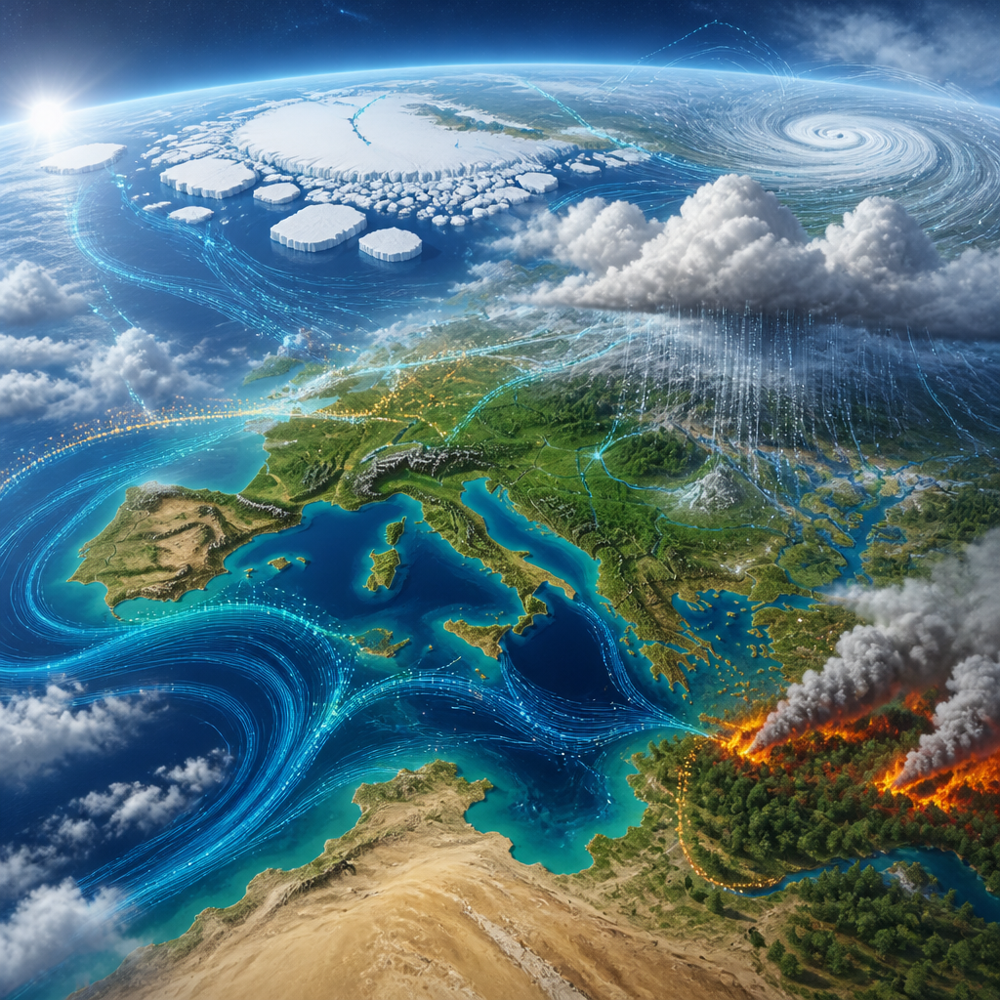
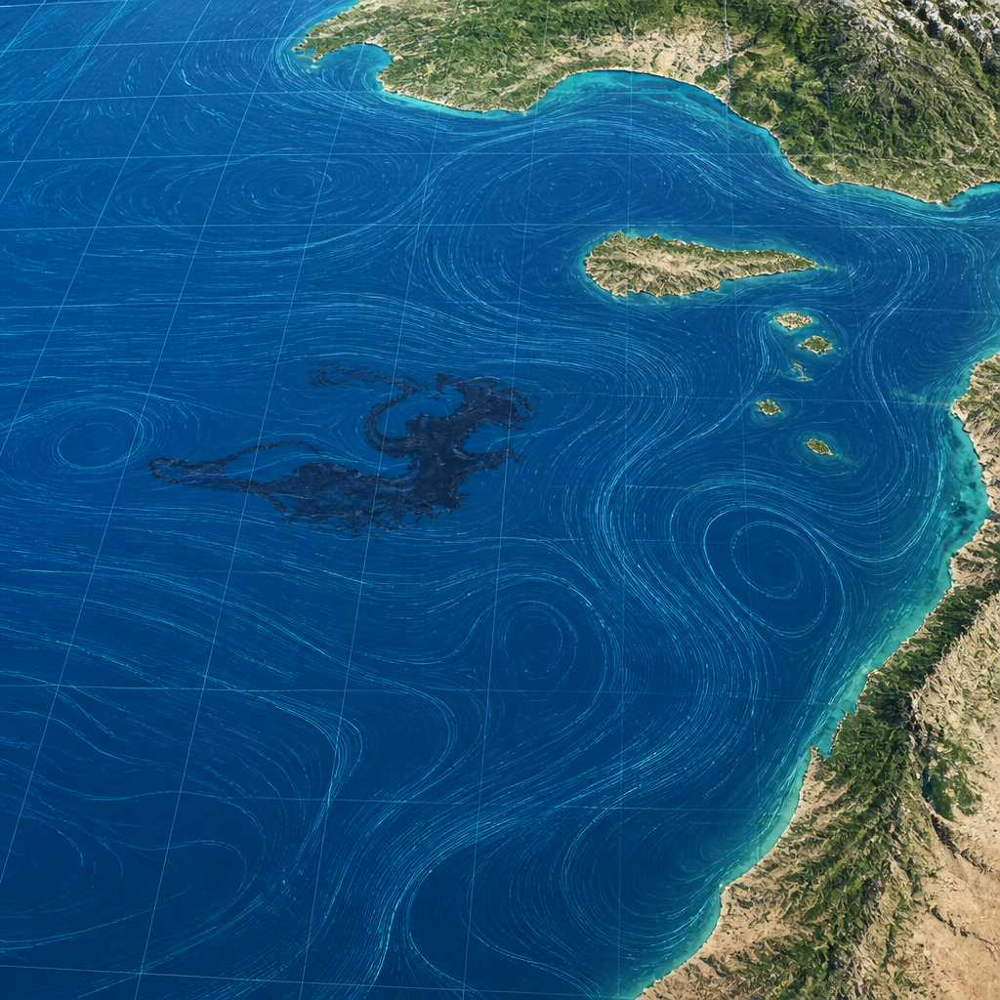

Intelligenza artificiale, previsioni ambientali e scenari climatici tra i temi portati dal CMCC all’incontro internazionale di San Francisco.
Dall’intelligenza artificiale applicata alle emergenze ambientali alle alluvioni, dal ghiaccio marino artico alle risorse idriche: sono molti i filoni di ricerca che il Centro Euro-Mediterraneo sui Cambiamenti Climatici porterà ad AGU26, l’incontro annuale dell’Unione Geofisica Americana. L’appuntamento si terrà a San Francisco dal 7 all’11 dicembre e riunirà la comunità internazionale delle scienze della Terra e dello spazio.
Il filo conduttore delle partecipazioni del CMCC è il rapporto fra ambiti che spesso vengono considerati separatamente. L’intelligenza artificiale, i processi dell’oceano, gli estremi climatici e i modelli usati per esplorare il futuro vengono invece letti come parti connesse di uno stesso quadro: il sistema Terra, cioè l’insieme di componenti e processi del pianeta che possono influenzarsi a vicenda.
Una parte rilevante dei contributi riguarda l’intelligenza artificiale, usata qui come insieme di approcci guidati dai dati che possono affiancare i metodi scientifici già consolidati. Un esempio è la previsione degli sversamenti di petrolio nel Mediterraneo costiero. Un sistema di previsione sviluppato dal CMCC ha mostrato un miglioramento dell’accuratezza fino al 25%, con possibili benefici per la risposta alle emergenze e per la protezione dell’ambiente.
Il lavoro si collega all’esperienza del centro nelle previsioni oceaniche e nello studio del destino degli inquinanti nel Mediterraneo. Ad AGU26 sarà inoltre affrontato il ruolo dell’intelligenza artificiale nella valutazione del pericolo di incendi. I ricercatori stanno lavorando a una piattaforma che riunisce fonti diverse di informazione per monitorare il rischio, valutarlo e pianificare gli interventi, includendo anche la previsione del comportamento del fuoco. L’obiettivo è connettere l’innovazione tecnologica alle esigenze delle comunità locali e di chi prende decisioni.
Altri contributi esploreranno metodi emergenti per le scienze della Terra, fra cui l’apprendimento automatico quantistico applicato all’osservazione del pianeta e strumenti per valutare i campi geofisici prodotti dall’intelligenza artificiale. I campi geofisici descrivono variabili e fenomeni fisici della Terra nello spazio e nel tempo.

Capire il cambiamento climatico richiede di osservare le connessioni nel sistema Terra. L’oceano e le dinamiche del clima sono centrali in questa prospettiva. Fra le ricerche presentate ci sarà lo studio della variabilità e della prevedibilità del ghiaccio marino artico, una componente importante del sistema climatico e un indicatore dei cambiamenti ambientali in corso.
Il Mediterraneo e l’Atlantico offrono altri esempi di intreccio tra processi oceanici, ecosistemi e clima. Le fioriture di sargasso, grandi accumuli di alghe, sono spesso considerate una sfida ambientale. La ricerca sta però esaminando anche il loro possibile ruolo nella rimozione del carbonio e nella produzione di biocarburanti. A San Francisco sarà presentato uno studio sui fattori che guidano nel passato, nel presente e nel futuro la grande fascia atlantica di sargasso.
Con il cambiamento climatico, frequenza e intensità degli eventi estremi si stanno modificando. Per rafforzare preparazione e resilienza, cioè la capacità di affrontare i rischi e adattarsi, è necessario comprenderne i meccanismi. Un recente studio del CMCC ha introdotto l’idea dell’“effetto vicolo cieco” per spiegare perché alcune regioni mediterranee stanno diventando più esposte alle alluvioni estreme.
La ricerca mostra come condizioni geografiche e atmosferiche possano combinarsi aumentando il rischio di piogge severe e inondazioni. Il caso dell’Emilia-Romagna sarà fra quelli discussi all’incontro. Anche gli incendi saranno affrontati attraverso dati ad alta risoluzione e a più bande, raccolti nel tempo per analizzarli negli Stati Uniti.
Infine, il CMCC presenterà studi dedicati ai modelli, strumenti che aiutano a comprendere il funzionamento del sistema Terra, anticipare possibili cambiamenti ed esplorare processi a scale diverse. I temi includono le previsioni delle precipitazioni da alcune settimane a una stagione nei bacini fluviali europei, in collegamento con le necessità di gestione dell’acqua.
Altri lavori guardano alle decisioni in sistemi idrici complessi, compresi i sistemi con più serbatoi, e alle preferenze di chi li gestisce quando hanno usi diversi. Nel loro insieme, queste ricerche mostrano come la modellazione possa collegare la conoscenza scientifica alle applicazioni pratiche, aiutando a esaminare condizioni future e a gestire l’incertezza.
Ad AGU26 il CMCC presenterà ricerche su intelligenza artificiale e rischi ambientali, sversamenti di petrolio, incendi, ghiaccio artico, sargasso, alluvioni, previsioni delle piogge e gestione dell’acqua. Il punto comune è studiare le connessioni tra fenomeni diversi per sostenere decisioni più informate.
Questo articolo l'hai letto sul blog di Meteo News Radar: un'app che ti mostra da dove vengono i numeri, invece di limitarsi a dartelo. E ogni mattina ne trovi uno nuovo come questo.